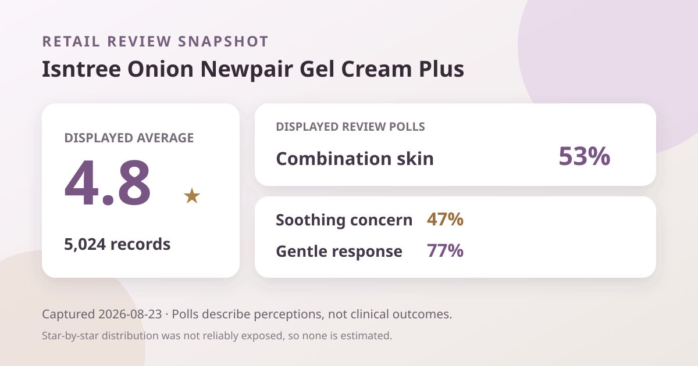
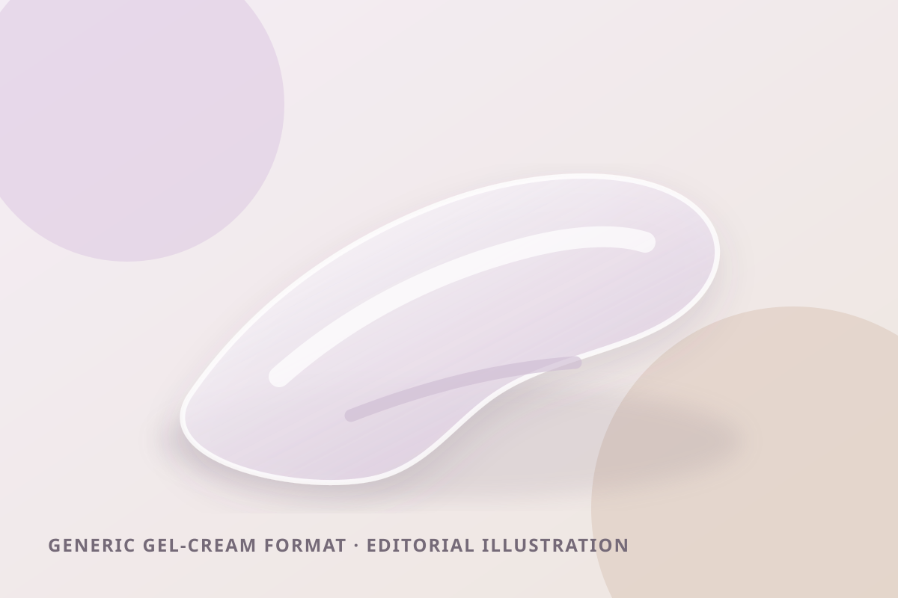

Data captured August 23, 2026. This article uses only the retailer's displayed aggregate rating, review count, polls, price, pack description, and anonymous automated summary themes. No individual review, reviewer name, product photo, or user photo is reproduced or translated. I did not test the product.

The short version: the listing showed 4.8 out of 5 from 5,024 review records. Its headline polls displayed combination skin at 53%, soothing as the leading concern response at 47%, and a gentle response at 77%. These signals can guide shopping questions; they do not prove scar fading, pigment correction, acne treatment, or calming efficacy.
A 4.8 average across 5,024 displayed records is a substantial satisfaction signal within Olive Young Korea's review system. Compared with a score built from only a few submissions, a four-digit review base is less vulnerable to one unusually high or low rating. It also shows that many people chose to leave feedback on this retail listing.
That does not make the score a controlled experiment. Reviewers can differ in climate, routine, amount applied, length of use, expectations, skin history, and products layered around it. The aggregate cannot isolate this gel cream as the cause of any change, confirm every reviewer's identity, or reveal how a clinically defined group responded.
The captured screen did not reliably show the shares for five, four, three, two, and one stars. Many distributions could produce the same rounded 4.8 average. Calculating exact shares would create false precision, so this analysis reports only the verified average and total.
Combination skin was the largest displayed skin-type response. This describes representation, not better performance for that skin type.
Soothing was the leading visible concern response. It records what respondents were seeking; it does not measure inflammation, redness, or treatment success.
A majority selected the gentle option. That perception cannot rule out stinging, allergy, clogged pores, breakouts, or irritation for an individual.
These percentages answer separate questions, so they should not be added or blended into one score. The screen did not provide each poll's respondent count. Converting the percentages into numbers of people would therefore be misleading.

The retailer's automated summary grouped recent positive discussion into three broad themes: appearance and tone-related concerns, compatibility with base makeup, and a fresh, comfortable gel-type feel. These are paraphrased anonymous aggregate themes, not copied or translated reviews. They are prompts for research, not verified outcomes.
The first theme needs the most restraint. Product naming and retail discussion may use language around old blemish marks or uneven-looking tone, but a retail summary cannot establish that a cosmetic fades scars or treats pigmentation. It cannot separate the product's role from sunscreen, time, other actives, or natural change. Persistent or medically concerning discoloration should not be assessed through retail sentiment.
The makeup-layering theme is practical but subjective. Compatibility can change with application amount, waiting time, humidity, and the formulas used above and below it. This capture included no standardized test of pilling, adhesion, shine, or wear.
The page also displayed an automated statement that 89% of recently summarized material was positive. That is the retailer's classification of a recent subset, not the percentage of all 5,024 records that achieved a result. It is not an efficacy rate or a forecast.
The listing calls the product a gel cream, and the aggregate theme emphasized a lighter, fresher feel. That supports only a format-level expectation: it is marketed between a fluid gel and a traditional cream. It does not verify the formula's color, scent, slip, tack, absorption time, residue, or occlusiveness.
The local illustration is intentionally generic. It explains the format without copying a product or user image. It is not a sample photograph and should not be used to judge the actual product. If finish matters, compare it with the sunscreen and makeup you actually use.
At capture, the Korea page displayed ₩17,900, a 44% markdown from a displayed ₩32,000 reference price. The title described a 50 ml gel cream with a 20 ml mini and two pads. Promotional-set accounting can change and may not value every included item equally.
This is a dated shelf snapshot, not a permanent offer. Verify the checkout price, full-size and mini volumes, pad count, stock, shipping, seller, and regional formula. Gifts and promotions can end without the core product changing. A discount does not establish fit.
“Onion Newpair Gel Cream Plus” is a name, not an ingredient assay or efficacy conclusion. This analysis does not estimate onion-derived ingredient concentration, infer dose from marketing, or turn “Newpair” into evidence of repair.
I did not independently verify a complete region-specific ingredient list. I therefore do not claim the product is fragrance-free, alcohol-free, essential-oil-free, non-comedogenic, pregnancy-compatible, or appropriate for eczema, rosacea, acne, allergy, or another condition. Check current packaging and official regional disclosures because formulas may change.
Use the directions on the product in your hand rather than a routine inferred from popularity. If you are prone to reactions, introducing one new item at a time and first trying a small area can make a concerning response easier to notice, although it cannot guarantee safety. Stop if a concerning reaction occurs and seek qualified advice when appropriate.
Decide what you need to learn: whether the finish works under sunscreen, whether the gel cream supplies enough comfort in your climate, whether any scent is acceptable, or whether the set is useful. Popularity and a 4.8 average justify investigation, but neither requires replacing a routine that works.
Combination skin was the largest displayed response at 53%. That gives audience context, not proof of better performance.
The visible poll showed a 77% gentle response. Individual tolerance still depends on formula, amount, routine, environment, and history.
No. The score summarizes retail satisfaction. It does not measure pigmentation, scar depth, lesion count, effect size, or causation.
No. It is a brand-neutral editorial illustration and does not depict the formula or prove its finish.
No. Confirm current contents, stock, seller, formula, and checkout price before buying.
Isntree Onion Newpair Gel Cream Plus has a sizeable retail feedback base: 4.8 stars from 5,024 displayed records, with poll context on combination-skin representation, soothing interest, and perceived gentleness. Its number-two skincare sales position made it the highest-ranked valid product not already covered.
The defensible conclusion is modest. Many shoppers reported a positive experience within this retailer's system, and the displayed themes point to makeup layering and gel-type feel as useful questions. The data does not establish pigment correction, acne or scar treatment, ingredient dose, universal gentleness, or suitability for a medical concern.
← All reviews · Rankings · Skin-poll guide · Methodology
Published by The K-Beauty Data Desk · Aggregate data captured 2026-08-23. No individual review, name, product photo, or user photo is reproduced or translated, and I did not test the product. I received no free product and am not paid or approved by the brand. Check the dated source listing.
Data basis: the live Olive Young Korea skincare ranking and product/review screens captured 2026-08-23. The product title, rating, review count, price, promotional pack, poll shares, and retailer-generated aggregate themes are source facts. Interpretation and cautions are editorial.